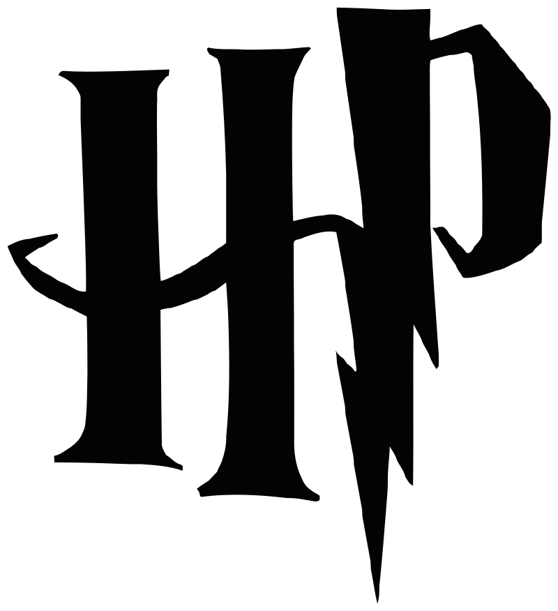

Гаррі Поттер (серія фільмів)
Гаррі Поттер
Гаррі Поттер — це британсько-американська серія кінофільмів на основі творів про пригоди головного
героя
Гаррі Поттера письменниці Джоан Роулінг. Серія складається з восьми фентезійних фільмів, починаючи з Гаррі
Поттера та Філософського каменю (2001 р.) й закінчуючи Гаррі Поттер і Смертельні реліквії: Частина 2 (2011
р.). Спін-оф серії буде складатися з п'яти фільмів, починаючи з Фантастичні звірі і де їх шукати (2016 р.).
Серію виробляли студія Девіда Геймана Heyday Films і студія Кріса Коламбуса 1492 Pictures, а зірки
Деніел
Редкліфф, Руперт Грінт і Емма Вотсон зіграли трьох провідних персонажів: Гаррі Поттера, Рона Візлі та
Герміону Грейнджер. Над серією працювали чотири режисери: Кріс Коламбус, Альфонсо Куарон, Майк Ньюелл[en] і
Девід Єйтс. Сценарії були написані Стівом Кловзом, за винятком фільму Гаррі Поттер та Орден Фенікса (2007),
який написав Майкл Голденберг. Виробництво зайняло понад десять років, щоб закінчити історію про боротьбу
Гаррі Поттера та його друзів з Лордом Волдемортом.
Гаррі Поттер і Смертельні реліквії — сьомий і останній роман у серії, який був розділений на дві
частини.
Частина 1 була випущена в листопаді 2010 року, а частина 2 — у липні 2011 року.
Після знищення одного горокракса і виявлення значущості Смертельних реліквій, Гаррі, Рон та Герміона
продовжують шукати інші горокракси, щоб знищити Волдеморта, який зараз отримав наймогутнішу в світі —
бузинову паличку. Темний Лорд викриває полювання Гаррі на горокракси і розпочинає атаку на Гоґвортс, куди
тріо повертається на останнє протистояння темним силам, які загрожують світам чарівників та маглів.

Джон Вільямс створював музику для перших трьох фільмів та отримав номінацію на премію «Оскар» для першого та
третього фільмів.
Серія фільмів про «хлопця, який вижив» мала чотирьох композиторів. Джон Вільямс перші три фільми:
Філософський камінь, Таємна кімната та в'язень Азкабану. Проте, другий фільм був адаптований та виконаний
Біллі Россом через конфліктні зобов'язання Вільямса.
Після того, як Вільямс залишив серію для проведення інших проєктів, Патрік Дойл створив композиції для
четвертого фільму, яким керував Майк Ньюел, з яким Дойл працював раніше. У 2006 році Ніколас Гупер почав
працювати над 5 фільмом під керівництвом режисера Девіда Єйтса. Гупер також склав саундтрек до 6 фільму, але
вирішив не повертатись до фінальних фільмів.
Гаррі Поттер і Філософський Камінь
Відомий в Індії та Сполучених Штатах як Гаррі Поттер і Чарівний камінь. Гаррі Поттер — хлопець-сирота,
вихований маглами (тіткою Петунією та дядьком Верноном). У віці одинадцяти років Рубеус Геґрід повідомляє
йому, що він насправді є чарівником, і його батьків вбив темний чарівник Лорд Волдеморт. Волдеморт також
намагався вбити однорічного Гаррі тієї ж ночі, але його смертельне закляття відскочило і привело його до
слабкої та безпорадної форми самого Волдеморта. У результаті Гаррі став надзвичайно відомим у світі
чарівників. Гаррі починає свій перший курс у Гоґвортсі — школи чарівництва та магії. Протягом року Гаррі та
його друзі Рон Візлі та Герміона Грейнджер заплутуються у таємницю філософського каменю, який зберігається у
школі.
Гаррі Поттер і Таємна Кімната
Гаррі, Рон і Герміона повертаються до Гоґвортсу на другий рік, який видасться набагато важчим ніж перший.
Гаррі Поттер дізнається, що в Гоґвортсі мешкає чудовисько — Василіск. Гаррі виявляє, що він, як і Салазар
Слизерин здатен говорити Парселмовою, і виявляє дивні властивості таємничого щоденника, який належить Тому
Марволо Редлу.
На шостому році Гаррі у Гоґвортсі Лорд Волдеморт і його пожирачі смерті посилюють свій страх перед світами
чарівництва та маглів. Директор Альбус Дамблдор переконує свого старого друга Горація Слизнорта повернутися
до Гоґвортсу професором, оскільки є вакантна посада. Однак, існує більш важлива причина для повернення
Слизнорта. У той час, на уроці зіллє-варіння Гаррі знаходить старий анотований шкільний підручник,
підписаний «Це власність Принца напівкровки». Драко Малфой намагається здійснити вчинок, заданий йому
Волдемортом. Тим часом Дамблдор і Гаррі таємно працюють разом, щоб знайти спосіб знищити Темного Лорда раз і
назавжди.
Гаррі Поттер і В'язень Азкабану
Третій рік Гаррі Поттера у Гоґвортсі. Професор Р. Дж. Люпин приєднується до штату як учитель захисту проти
темного мистецтва, в той час, як засуджений вбивця Сіріус Блек втікає з Азкабану. Міністерство магії доручає
дементорам Азкабану захищати Гоґвортс від Блека. Гаррі дізнається більше про своє минуле та про зв'язок із
Сіріусом..
Гаррі Поттер і Келих Вогню
Під час четвертого курсу у Гоґвортсі триває легендарна подія: Турнір трьох чарівників. У турнірі беруть
участь три школи, з трьома «чемпіонами», які представляють кожну школу у смертельних завданнях. Келих вогню
вибирає Флер Делакур, Віктора Крама та Седрика Діґорі, щоб конкурувати один з одним. Однак, що цікаво, ім'я
Гаррі також випадає з келиха, що робить його четвертим чемпіоном і надалі призводить до страшної зустрічі з
відродженим Лордом Волдемортом.